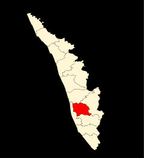

 Kottayam district is famous for its rich heritage and literary tradition. It is renowned for its spice and rubber trade. Cradled by the backwaters and the Western Ghats, it is epitomised by its stretches of vast greenery, paddy fields and huge rubber plantations. Over five of the State’s leading newspaper publications originate from Kottayam. About four-fifth of books published in the State come from here as well. From trekking hotbeds like Nadukani and Kottathavalam to the rare avian life on display at the Kumarakom Bird Sanctuary, this district encompasses everything that God’s Own Country is famous for. Well connected to the entire State, it is full of interesting historical and cultural locations that tell the tale of how the district was forged into its current form.